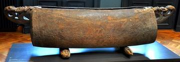
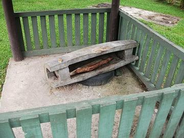
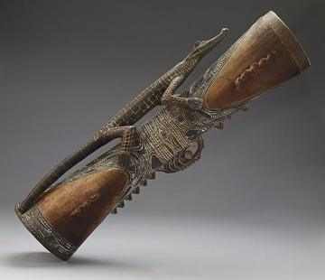

Home / Living Traditions / Pacific and Oceania
Playable heritage gameLagerphone
The lagerphone is an Australian bush instrument: a wooden pole studded with flattened bottle caps threaded loosely on nails. Shaken, struck with a stick and stamped on a board it jingles and thumps to keep time for bush bands, and it can be made from almost nothing.
How to play
- The pole stands on its stamping board: the crown of caps at the head, rows of caps down the shaft.
- Top is the crown, Upper, Middle and Lower the rows of caps down the pole, and Stomp the board under the foot.
- A ring closes on the place to strike. Strike as it lands.
- Begin with the stomps and the middle rows, then add the crown.
Rules at a glance
- A stroke on the beat is perfect, a near one is good, and extra strokes cost points.
- Each pattern repeats twice.
- The patterns count four beats to the bar.
About the tradition
Players of the bush bands made lagerphones from broom handles and the caps they had at hand. The player stamps the foot on a board for the bass beat while the caps ring on the pole, so one person can keep the whole band in time.
Origins
A living tradition passed from person to person; it is not tied to a single dated origin. It belongs to the cultural world of Pacific and Oceania.
Credits
- Tradition: the Lagerphone; patterns written for this game
- Text: CC BY-SA 4.0, World Heritage Games.
Sources

Get the app
Lagerphone is one of 11 drums and percussion in the Asian & Island Percussion app for Android. Submitted to Google Play; in review. Store links appear here the day it goes live. One app, many traditions, no account needed.
More games to play


Fijian bamboo drum ensemble
Fiji · Musical instrumentsPlay preview · in the Asian & Island Percussion app


More from Australia

Axemen woodchop
Australia · Other traditions


Netball
Australia +1 · Team ball sports